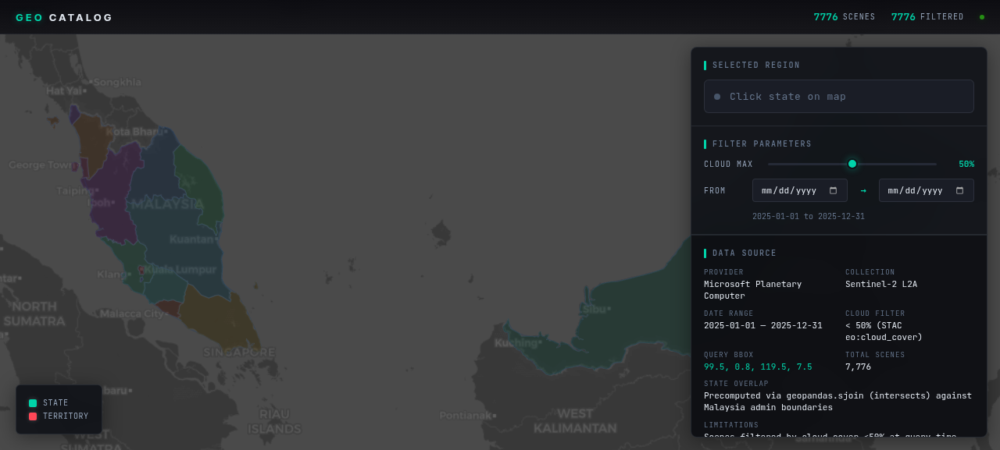

malaysia-geo-catalog
A static geospatial data catalog for exploring Sentinel-2 L2A scenes over Malaysia. It uses Microsoft Planetary Computer STAC data, Python preprocessing, GeoParquet artifacts, MapLibre rendering, state-level filtering, cloud/date filters, MGRS tile extraction, and a dark operational UI.